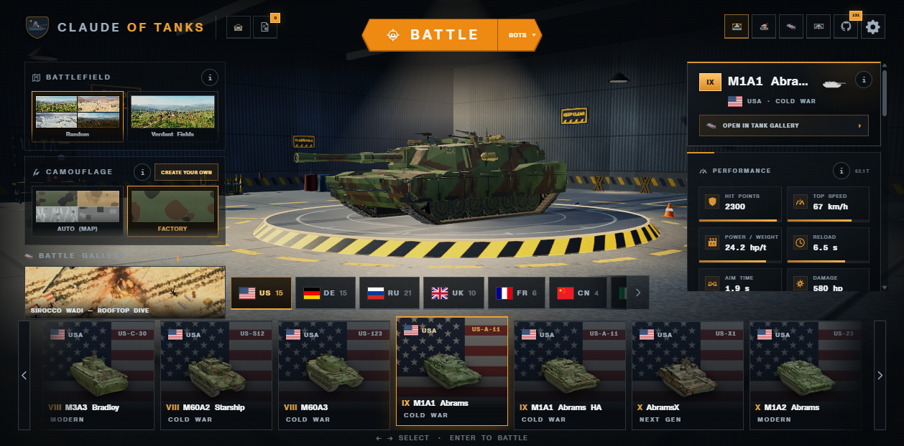
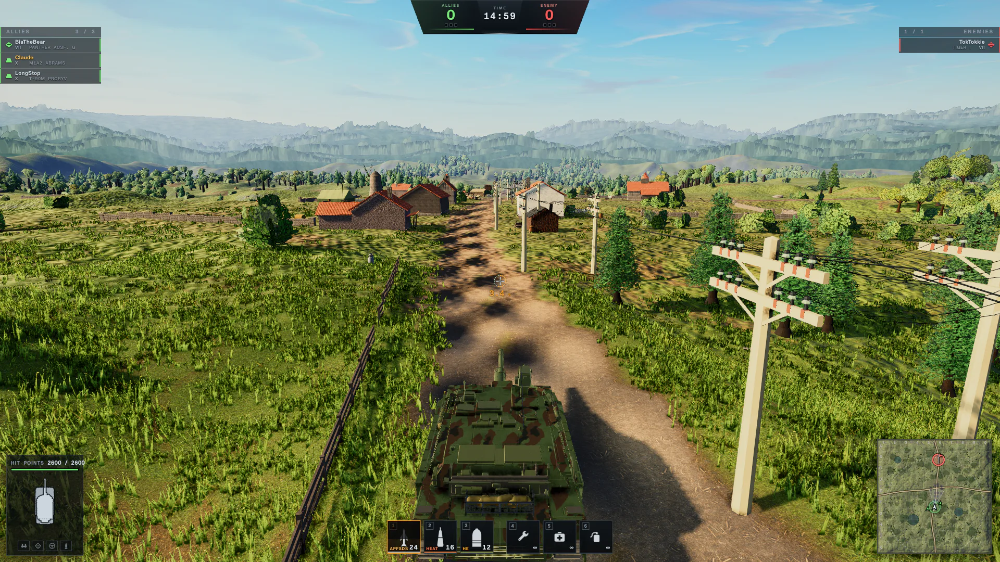
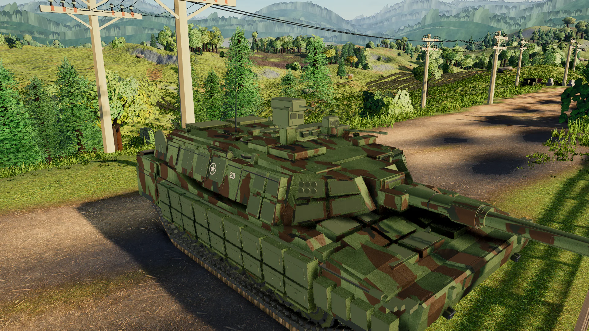
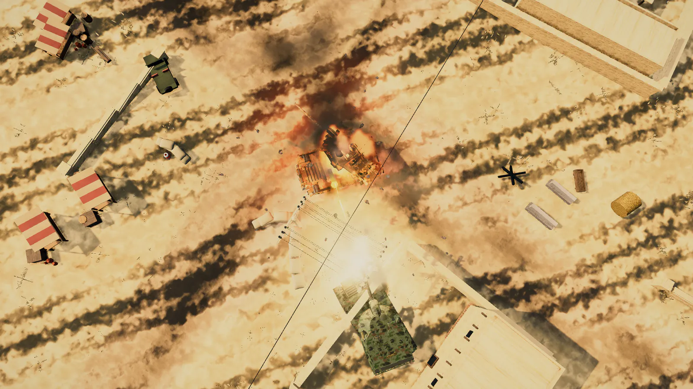
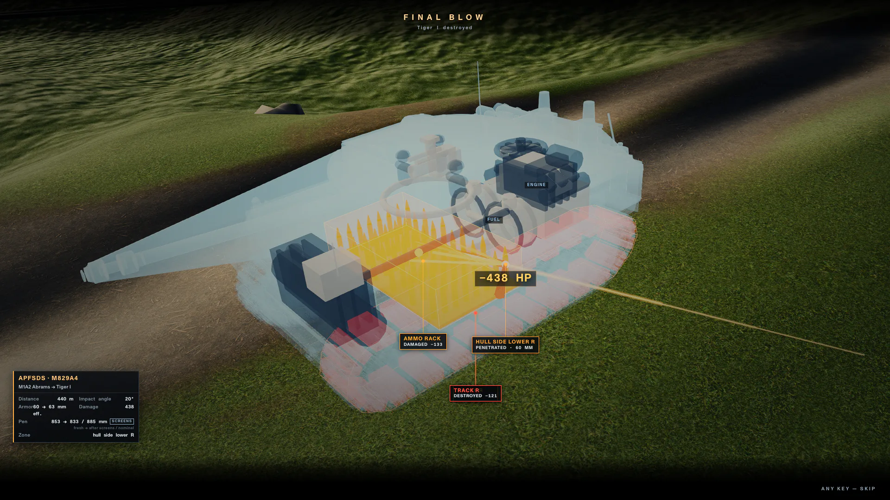
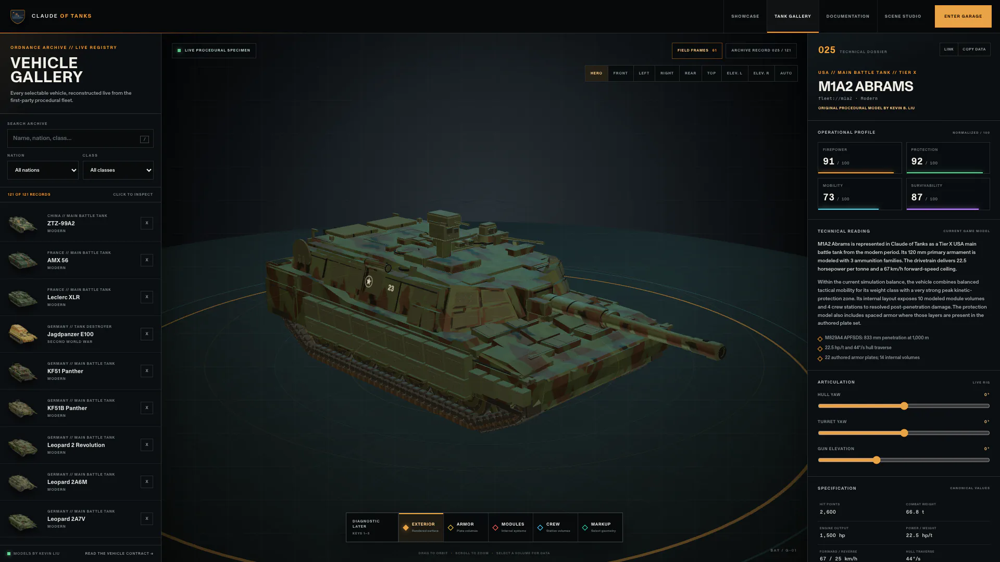
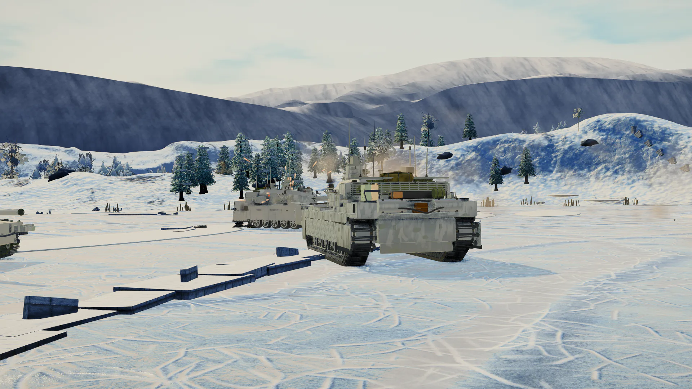
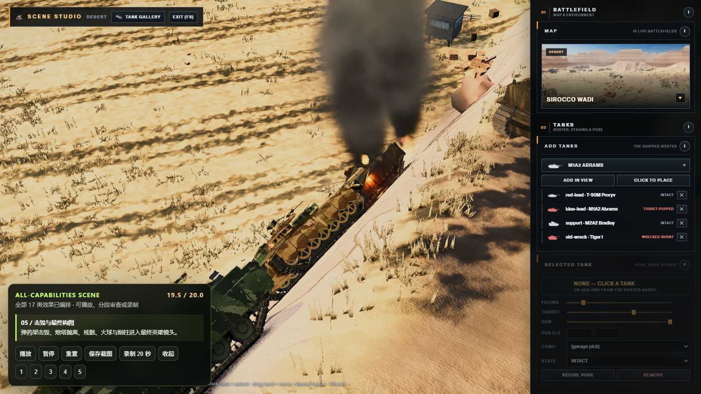
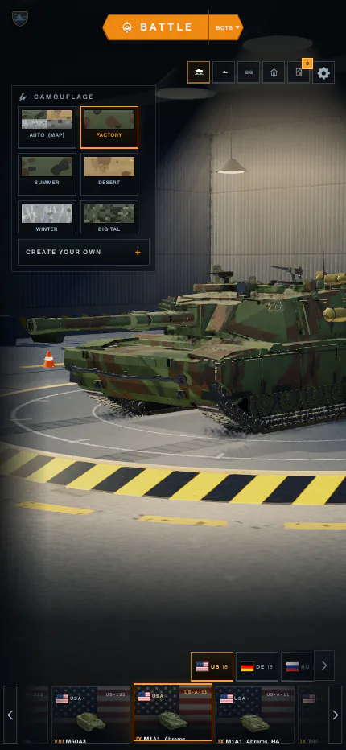
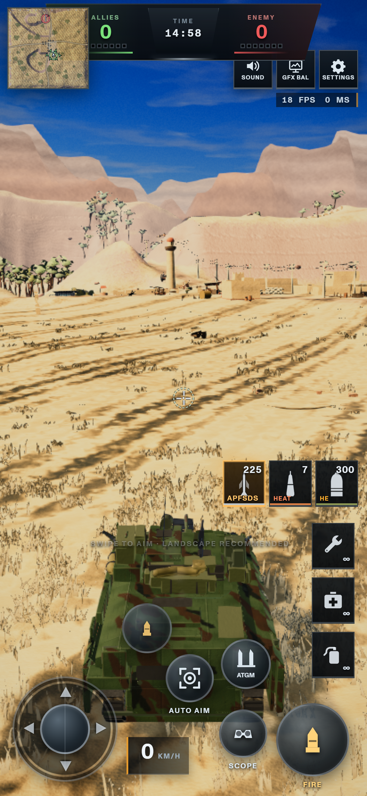

输入与意图
键鼠、触屏、AI 或网络输入变成驾驶、炮塔、开火和装备意图。
PHASE 01 ARCHIVED · THREE.JS · PROCEDURAL VEHICLES
Claude of Tanks 在浏览器中把程序化战车、驾驶与火控、伤害模型、AI、地图、车库、剖面图库、场景导演和多人同步连成一个系统。它可以作为 Web 3D 战车项目的研究基座，但并不是换模型就能适配所有 3D 产品的通用引擎。

标记为“本机实测”的画面来自当前固定版本真实运行，其余为上游随版本发布的素材。发布素材用于确认能力边界；是否跑通，以“实测证据”为准。








键鼠、触屏、AI 或网络输入变成驾驶、炮塔、开火和装备意图。
固定步长更新车辆、弹道、装甲穿透、模块、乘员、可见性和胜负。
连续状态负责位置姿态，离散事件描述开火、命中、断履带和击毁。
Three.js、HUD、录像、联机、Gallery 和 Studio 读取同一套领域数据。
可复用的不是“坦克皮肤”，而是数据驱动车辆工厂、固定步长模拟、状态/事件协议、相机与后处理、调试审查界面。做机甲、舰船或工程机械时可以保留骨架；做建筑可视化或电商展厅时只应取渲染、相机和资产管线。
122 辆战车、20 张地图、移动、战斗、侦察、装备、归因和 Studio 时间线测试全部通过。
真实 Chromium/WebGL 中构建 4 辆载具和 25 个实例，覆盖全部 17 类 Studio 效果、6 镜头和 3 条车辆轨道；控制台 0 错误。
Vite 私有构建完成：295 个模块、5 个 HTML 入口；主包和车辆工厂包偏大。
进入车库和 Bot 战斗；Gallery 切换 5 个检视层，并创建带网格、法线和三角面信息的标注。
85 ms 延迟、35 ms 抖动、12% 状态丢包下完成同步、权威采样、第二回合与干净离场。
2v2 四人握手与权威切换成功，但最慢推进 34.8 ms；14 会话均建立，完整大厅名单未收敛。
20 秒综合场景在真实 Chromium 中进入 ready，17 类效果、seek 与三张截图通过；2560px 原生 capture 和 WebM 完整门禁尚未重新认证。
全功能流程与 WebGL 恢复均完成，但 7 个性能站点失败。

Phase 01 已完成能力、原理、意义、复用边界、性能风险和扩展方向的整理。公开发布能力总览、轻量归档与独立产品工作台；沙漠组合场景和视觉层实验室保留为本地研究证据。
上游以 Git submodule 固定到 fba54d06a5ccf1053477efde5e60bb9b338584e9。研究脚本、截图和报告不污染上游工作树。
git submodule update --init projects/claude-of-tanks/upstream
npm.cmd --prefix projects/claude-of-tanks/upstream install --no-package-lockpowershell -File projects/claude-of-tanks/scripts/start-research-platform.ps1
# open http://127.0.0.1:4176/research